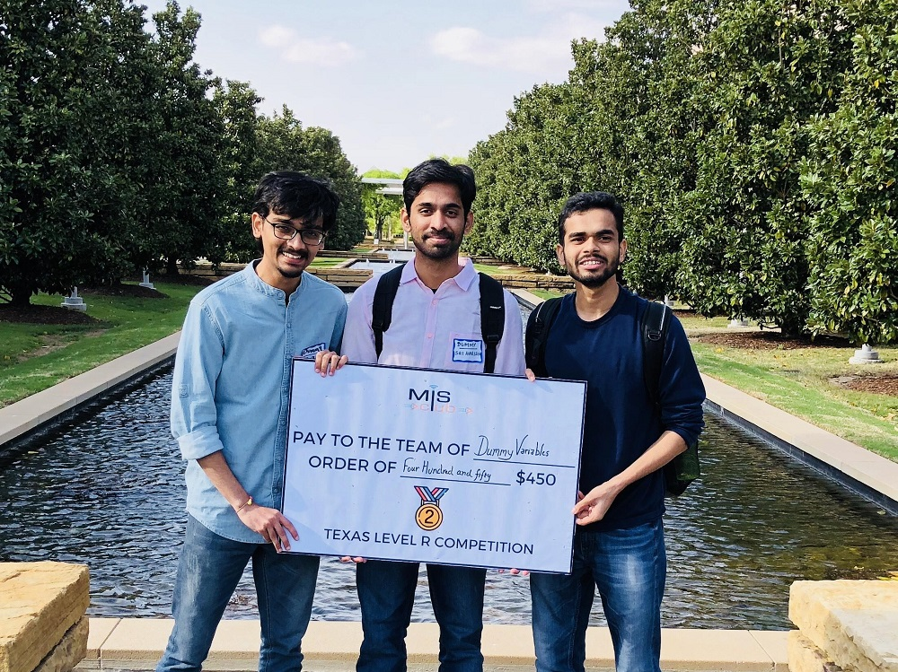
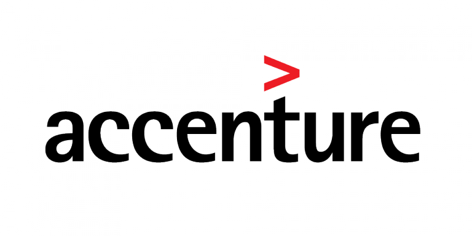

The University of Texas at Dallas, 2018 - 2019
Masters of Science in Business Analytics with Data Science concentration
University of Mumbai, 2011 - 2015
Bachelor of Engineering in Electronics and Telecommunication
Udacity, 2025 - 2027 (in progress)
Machine learning, AI engineering and agentic AI for intelligent data systems
AWS Certified Cloud Practitioner
AWS Certified AI Practitioner
I started as a data engineer at Accenture, building ETL pipelines and reporting for enterprise clients. Later, earned my M.S. in Business Analytics at UT Dallas.
Since then I've built data products at Daimler, Microsoft, and Nike. At Nike I led data engineering and analytics projects within supply chain programs that saved over $70M.
Today I'm growing from data engineering into AI engineering: building real-time streaming and agentic AI projects that tackle real problems in India and beyond, from sustainability and waste to hunger.
When I'm not glued to my laptop, I love traveling and trying new things. Currently, obsessed with putting house plants in every little corner I can find. Also gardening, painting a little bit here and there.
I'm passionate about sustainability, environment, finding creative ways to reduce and repurpose waste wherever we can. I'm dabbling into music and DIY crafts. Let's connect if you'd like to collaborate on Data, AI, Policy, or Sustainability initiatives.
Kforce Inc, India · Apr 2026 - Present
Building robust, resilient data pipelines on AWS, Databricks and Snowflake for enterprise clients.
Microsoft, Seattle, WA · Jun 2021 - Nov 2021
Delivered data and analytics solutions as a consultant, translating business requirements into automated reporting.

Accenture, Mumbai, IN · 2015 - 2017
Built SQL and ETL pipelines powering 17 product reports for a release forecast at £10M+ revenue per quarter.
Robust, resilient, scalable batch and real-time streaming pipelines and production ML workflows that help business in the time of need. Expertise: SQL, Python, Spark, Kafka, AWS, Databricks, Snowflake.
AI agents and LLM-powered tools that automate real work, built on clean, production-ready data and designed to keep model and infrastructure costs low.
Fast, focused web apps that turn data into something people can use, like the live apps in my portfolio. Built with JavaScript, Python, cloudflare, etc.
Data-driven analysis of public policy and regulation, from carbon markets and emissions disclosure to trade rules, with clear dashboards that turn complex rules into decisions.
Measure and reduce waste across your supply chain, from tracking excess materials to building sustainability reporting that drives real savings.
Classifying disaster-related tweets with PySpark MLlib, from text cleaning and feature extraction to model training at scale.
Read article →Building an interactive R Shiny app with plotly to explore which industries, cities and employers sponsor H1-B visas.
Read article →How a trend in aggregated data can reverse inside its subgroups, shown with real 2016 election results.
Read article →